Stampt
Capture photos through real vintage postal stamps.
Every shot lands inside a perforated keepsake.
A Keepsake Camera
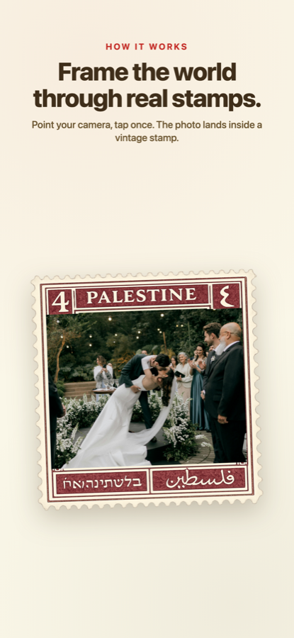
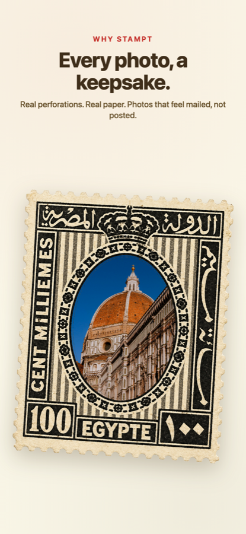
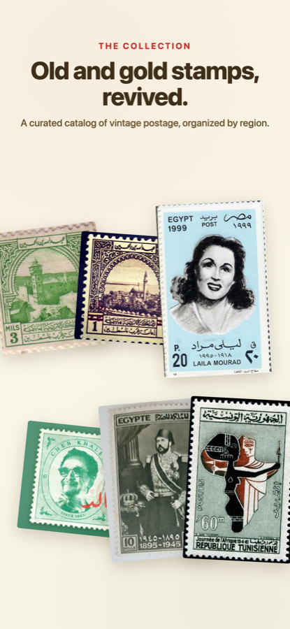
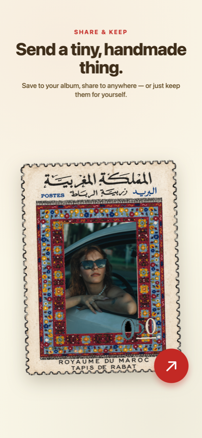
The Collection
Real vintage stamps from across the region — and the photos people frame through them. Nothing posed, nothing AI-generated.
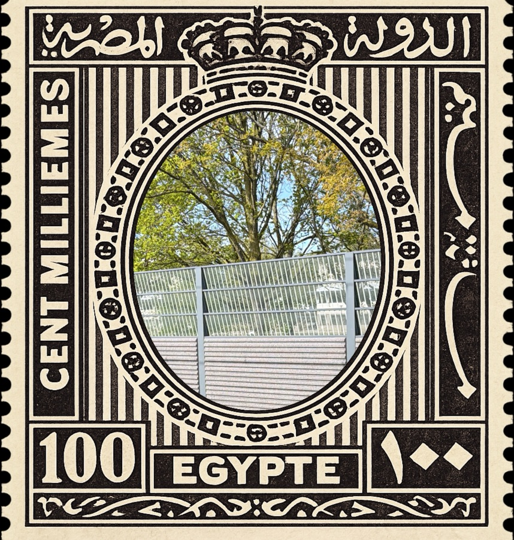
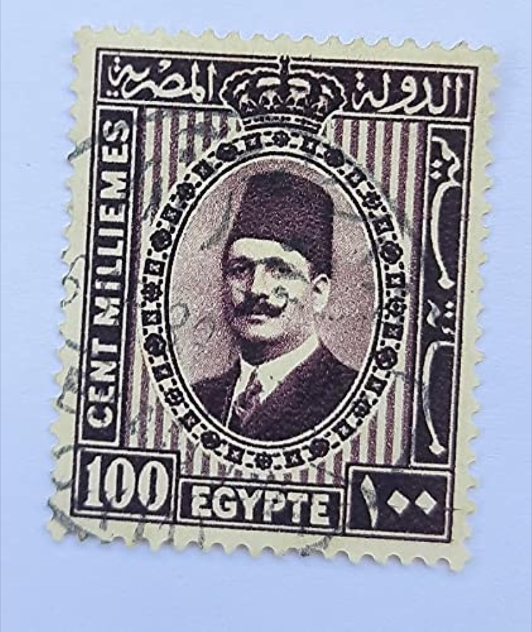
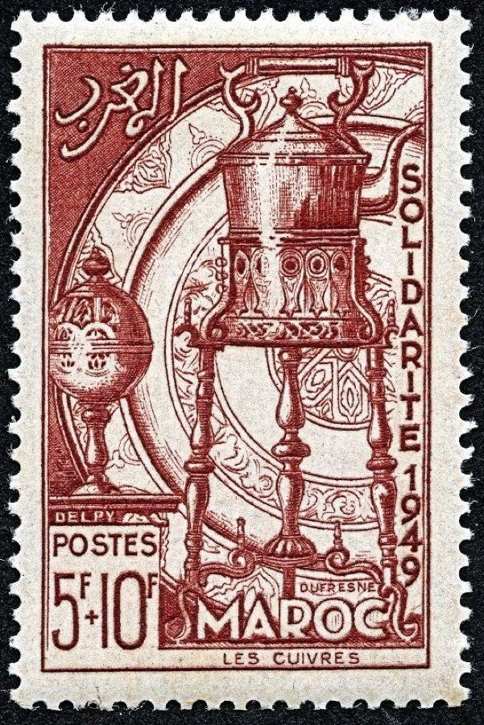
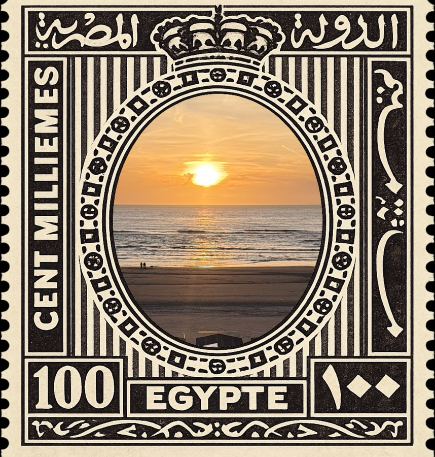
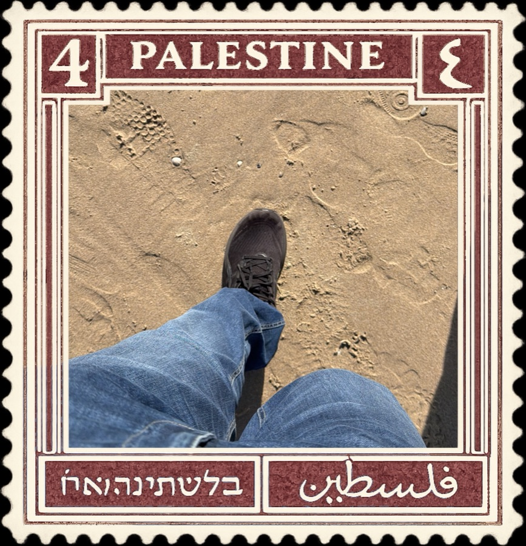
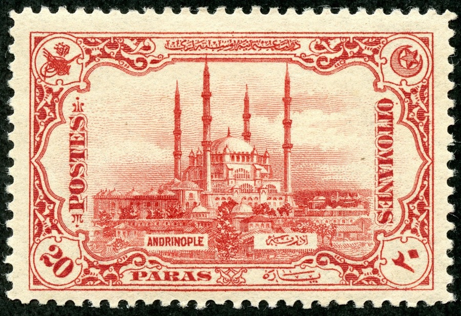
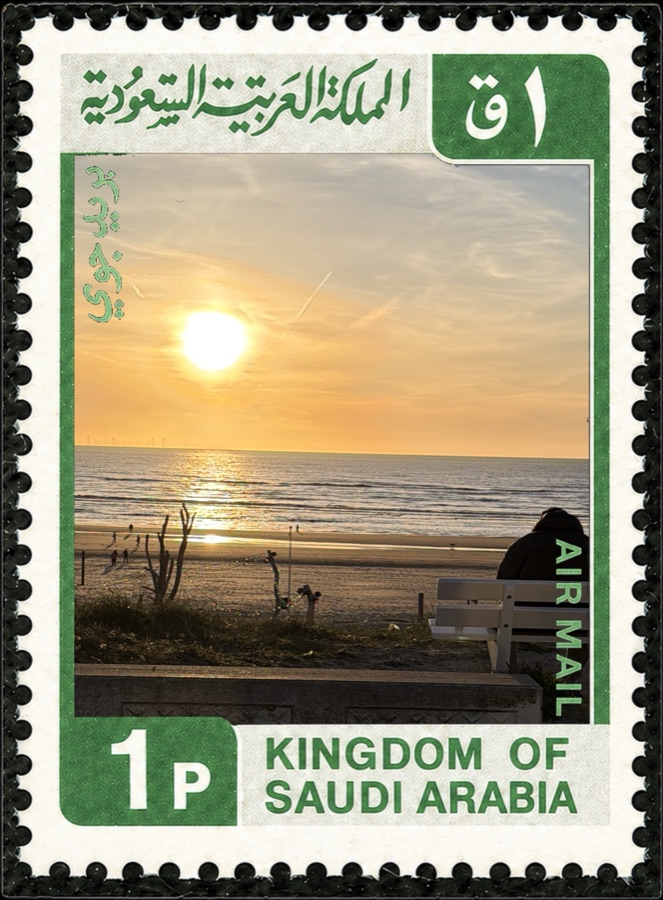
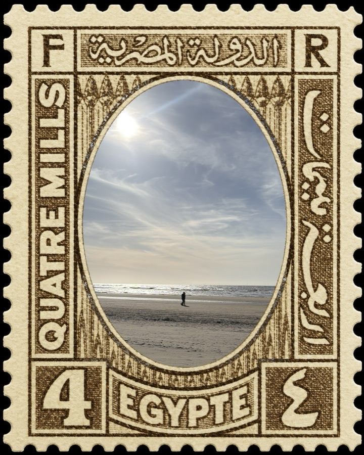
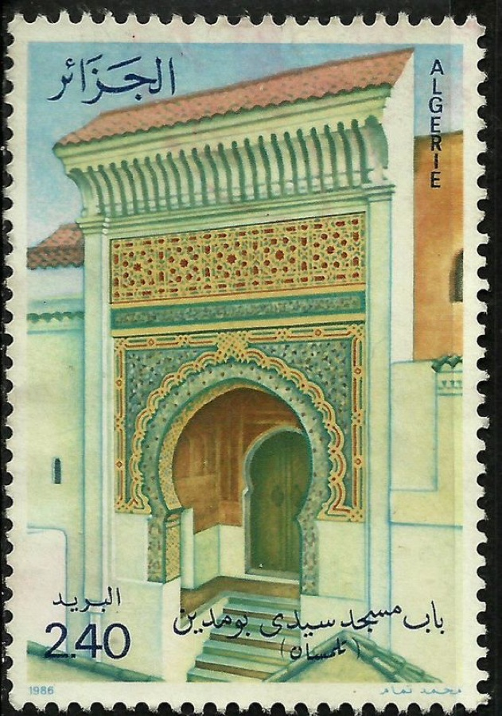
What Makes Stampt
Frame the World Through a Stamp
Open the camera, pick a stamp, and the viewfinder shows your shot already inside the perforated window. Tap once. That's the keepsake.
Real Vintage Stamps
Every stamp is a high-resolution scan of an actual postal stamp — Egypt, Palestine, Lebanon, Saudi Arabia, Jordan, Morocco. Real perforations, real paper, real ink.
Album That Feels Mailed
Stamped photos land in an album that looks like a collector's page — soft paper, decisive rotation, room to breathe. Built to feel kept, not posted.
Share or Just Keep
Save to Photos, send to anywhere — or simply keep them for yourself. Stampt never uploads your captures.
Curated Catalog
Stamps grouped by region — Levant, Gulf, Egypt, North Africa — with the design history that makes each one worth reviving.
Works Offline
Camera, stamp catalog, and album work entirely on-device. No account, no upload, no waiting on a server.
Questions
Stampt is a keepsake camera for iPhone that frames your photos inside real vintage postal stamps. Point through a stamp, tap, and the photo lands inside the perforated edges — ready to save or share.
Yes. Every stamp is a high-resolution scan of an actual vintage postal stamp from Egypt, Palestine, Lebanon, Saudi Arabia, Jordan, Morocco and beyond — with original perforations, paper texture, and ink. Nothing generated, nothing fake.
Yes. Camera, stamp catalog, and album all work fully offline. No account required.
Stampt is free to download. A small Pro subscription unlocks the full stamp catalog and removes capture limits.
Captures live on your device. You can save them to your Photos library and share to anywhere — Stampt does not upload your photos.